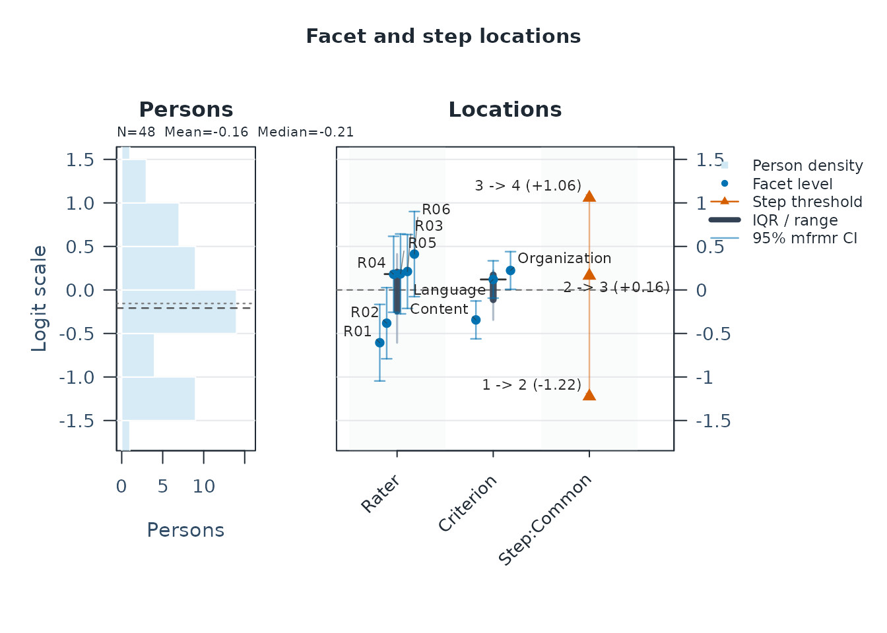
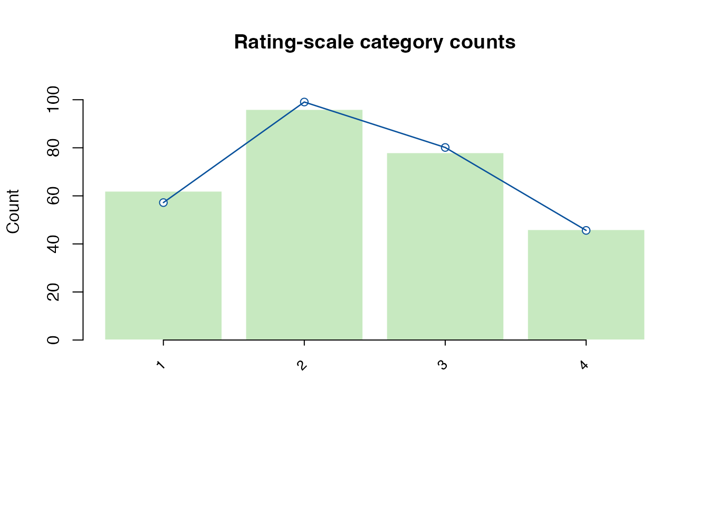
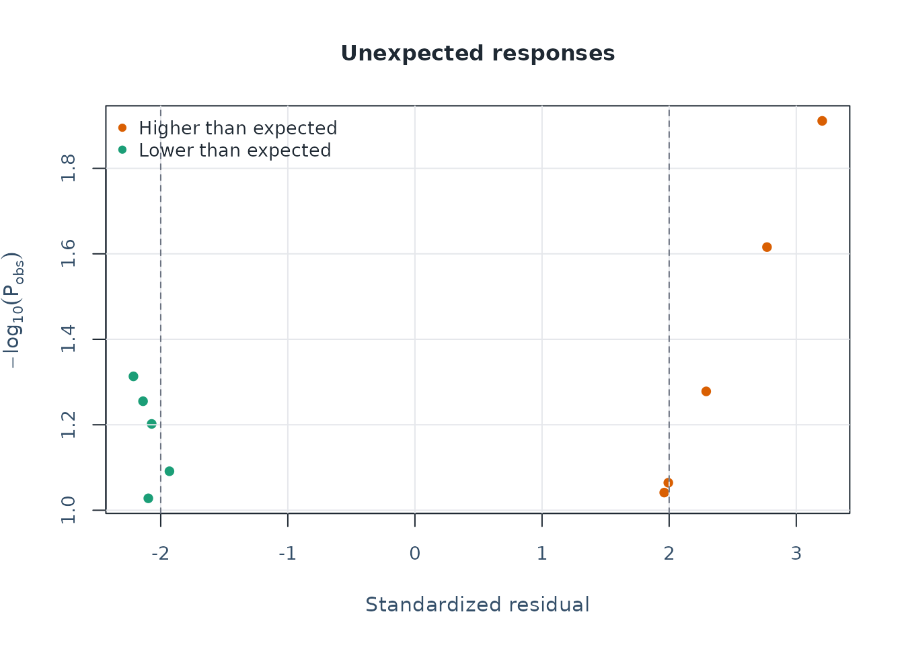
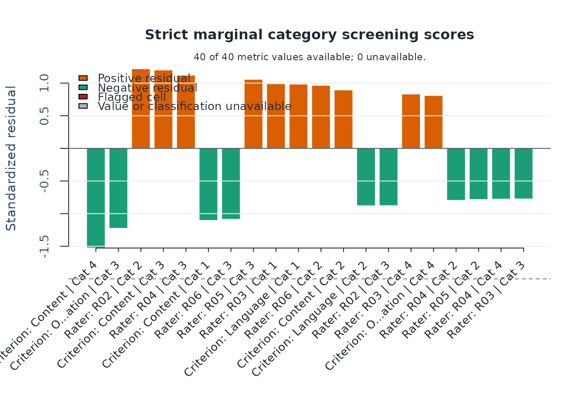
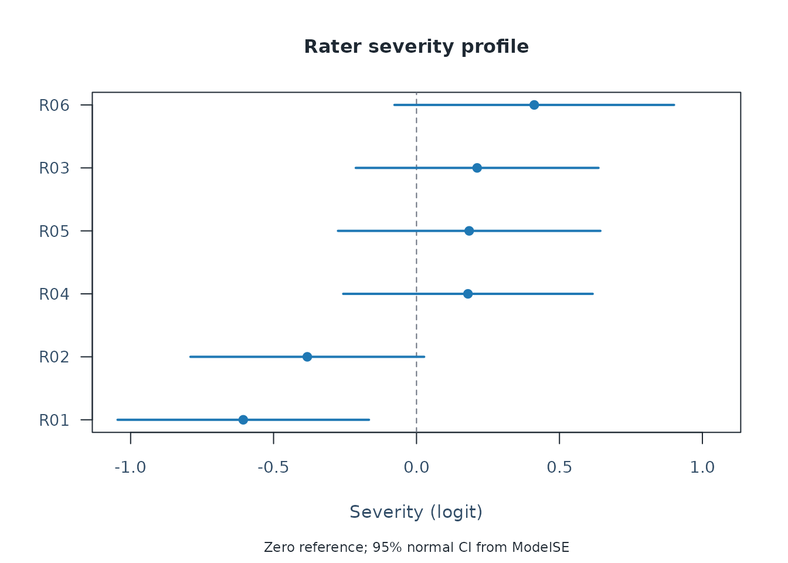

Quick start
This tutorial follows the ordinary fixed-facet
fit_mfrm() workflow. To choose between fixed facets, shared
random raters and Person-specific testlets, use
mfrmr_output_guide("models") or
help("mfrmr_workflow_methods"). The extended models have
dedicated tutorials:
vignette("mfrmr-random-raters", package = "mfrmr") and
vignette("mfrmr-testlets", package = "mfrmr"). Their
prediction targets and reporting support differ; the diagnostics and
comprehensive reports below require an ordinary mfrm_fit
result.
This example estimates person abilities while accounting for rater
severity and criterion difficulty. A facet is a source of
variation in scores; here, Rater and Criterion
are facets, and individual raters and criteria are their
levels. The data are synthetic, with one row per rating and
scores from 1 to 4.
head(toy) shows the first six rows. The quoted column
names in fit_mfrm() are case-sensitive; Study
and Group are extra labels unused by this model.
MML selects marginal maximum likelihood; RSM
selects a rating-scale model with shared category thresholds (the
transitions between adjacent scores).
# Load the package
library(mfrmr)
# Load example ratings and look at the first six rows
toy <- load_mfrmr_data("example_operational")
head(toy)
#> Study Person Rater Criterion Score Group
#> 1 OperationalExample P001 R01 Language 4 A
#> 2 OperationalExample P001 R01 Organization 2 A
#> 3 OperationalExample P001 R02 Content 4 A
#> 4 OperationalExample P001 R02 Language 3 A
#> 5 OperationalExample P001 R02 Organization 2 A
#> 6 OperationalExample P002 R01 Content 3 A
# Fit the model
fit <- fit_mfrm(
data = toy,
person = "Person",
facets = c("Rater", "Criterion"),
score = "Score",
method = "MML",
model = "RSM"
)
# Plot the results (Wright map)
plot(fit)
# Save the summary, then display its tables
results <- summary(fit)
results$person_overview # One row summarizing person ability estimates
#> # A tibble: 1 × 11
#> Persons DistributionN ReviewExcludedExtremeE…¹ EstimateUse Mean SD Median
#> <int> <int> <int> <chr> <dbl> <dbl> <dbl>
#> 1 48 48 0 source_fit… -0.155 0.824 -0.208
#> # ℹ abbreviated name: ¹ReviewExcludedExtremeEAPs
#> # ℹ 4 more variables: Min <dbl>, Max <dbl>, Span <dbl>, MeanPosteriorSD <dbl>
results$facet_overview # One row per facet: number of levels, mean, SD, range
#> # A tibble: 2 × 7
#> Facet Levels MeanEstimate SDEstimate MinEstimate MaxEstimate Span
#> <chr> <int> <dbl> <dbl> <dbl> <dbl> <dbl>
#> 1 Criterion 3 0 0.302 -0.344 0.224 0.568
#> 2 Rater 6 -4.64e-18 0.399 -0.606 0.412 1.02
# Check the interpretation status and recommended next step
results$decision
#> Interpretation
#> 1 Fit-readiness requirements satisfied; formal precision review required
#> FormalInference FitReadiness Why
#> 1 No ready Formal precision support has not been evaluated.
#> NextAction
#> 1 Run `diagnose_mfrm()` and pass its result as `diagnostics =` to evaluate formal precision support; fit readiness alone is not a formal-inference decision.<- saves an object without printing it. Here
toy holds the data, fit holds the model, and
results holds its summary. $ selects a named
part: results$person_overview displays just that table.
Enter results to print the full summary.
The Wright map displays the estimates in logits, the model’s measurement units, rather than the original 1-to-4 scores. With this example’s default orientation, higher person estimates mean higher ability; higher rater estimates mean stricter ratings, and higher criterion estimates mean greater difficulty.
The overview tables describe distributions:
person_overview has one row for all 48 persons, and
facet_overview has one row for each facet.
Mean/MeanEstimate is the average,
SD/SDEstimate is the spread, and
Min/Max or
MinEstimate/MaxEstimate give the endpoints.
Rater and criterion means are constrained to zero here; their SDs and
ranges show differences among levels.
Inspect individual estimates
estimates <- as.data.frame(fit)
head(subset(estimates, Facet == "Person")) # First six persons
#> Facet Level Estimate Extreme
#> 1 Person P001 0.28429588 none
#> 2 Person P002 0.66118004 none
#> 3 Person P003 0.02177773 none
#> 4 Person P004 0.22410785 none
#> 5 Person P005 -0.17496065 none
#> 6 Person P006 0.67681003 none
subset(estimates, Facet == "Rater") # All raters
#> Facet Level Estimate Extreme
#> 49 Rater R01 -0.6059776 <NA>
#> 50 Rater R02 -0.3820356 <NA>
#> 51 Rater R03 0.2120388 <NA>
#> 52 Rater R04 0.1799462 <NA>
#> 53 Rater R05 0.1842365 <NA>
#> 54 Rater R06 0.4117917 <NA>
subset(estimates, Facet == "Criterion") # All criteria
#> Facet Level Estimate Extreme
#> 55 Criterion Content -0.3441471 <NA>
#> 56 Criterion Language 0.1204520 <NA>
#> 57 Criterion Organization 0.2236950 <NA>Facet identifies the type of estimate,
Level identifies the person, rater, or criterion, and
Estimate is its value in logits.
Check what needs review
Read results$decision, especially Why and
NextAction, before interpreting or reporting estimates.
FormalInference = "No" in this first summary can mean that
precision has not yet been reviewed; it does not necessarily mean that
fitting failed. The default summary does not compute diagnostics.
diagnostics <- diagnose_mfrm(fit)
diagnostic_summary <- summary(diagnostics)
diagnostic_summary$decision
#> Interpretation FormalInference FitReadiness
#> 1 Ready for formal inference Yes ready
#> Why
#> 1 All stored fit-readiness components passed.
#> NextAction
#> 1 Inspect `diagnostic_basis` before comparing legacy residual evidence with strict marginal evidence.For your own data, follow Use your own
CSV below. For reporting,
res <- mfrm_results(fit, diagnostics = diagnostics)
builds a comprehensive object that reuses the checks above. Pass
res to mfrm_report() or
export_mfrm_results(); results remains the
basic summary.
Use your own CSV
The goal here is to estimate person ability while accounting for rater severity and criterion difficulty in your own ratings. Start with the same row layout as the packaged example: one score from one rater for one person on one criterion. For example:
| Person | Rater | Criterion | Score |
|---|---|---|---|
| 001 | R1 | Content | 3 |
| 001 | R1 | Style | 2 |
| 001 | R2 | Content | 4 |
| 001 | R2 | Style | 3 |
The repeated 001 is intentional: all four scores belong
to the same person. Keep IDs consistent across rows. These four rows
explain the layout; use the complete set of ratings for estimation.
Score contains the ordered integer categories from the
rubric, not totals or averages across raters. This example uses two
non-person facets; choose facets that represent your design.
1. Read and inspect the file
You can practice the full workflow without supplying a file. This block writes the packaged synthetic ratings to a new temporary CSV:
library(mfrmr)
csv_path <- tempfile(fileext = ".csv")
write.csv(load_mfrmr_data("example_operational"), csv_path,
row.names = FALSE, na = "")For your own data, export your rating sheet as CSV UTF-8, with column names in the first row. Skip the practice block above and select your file instead:
library(mfrmr)
csv_path <- file.choose()For a reusable script, replace file.choose() with a
quoted path such as "data/ratings.csv", relative to the
folder shown by getwd(). Both routes now use the same
import and analysis code:
ratings <- read.csv(
csv_path,
colClasses = "character",
na.strings = "",
check.names = FALSE,
fileEncoding = "UTF-8-BOM"
)
# Treat the documented missing-score marker only in the score column
ratings <- recode_missing_codes(ratings, columns = "Score", codes = "NA")
head(ratings)
#> Study Person Rater Criterion Score Group
#> 1 OperationalExample P001 R01 Language 4 A
#> 2 OperationalExample P001 R01 Organization 2 A
#> 3 OperationalExample P001 R02 Content 4 A
#> 4 OperationalExample P001 R02 Language 3 A
#> 5 OperationalExample P001 R02 Organization 2 A
#> 6 OperationalExample P002 R01 Content 3 A
names(ratings)
#> [1] "Study" "Person" "Rater" "Criterion" "Score" "Group"
table(ratings$Score, useNA = "ifany")
#>
#> 1 2 3 4
#> 62 96 78 46Reading columns as text preserves distinct IDs such as
001, 1, and NA;
mfrmr converts numeric score strings such as
"3" for estimation. check.names = FALSE
preserves the headers. Empty cells are missing in every column; the
literal marker NA is recoded only in Score.
Use the missing-score markers declared for your data. Zero is a score
when the rubric includes zero, and must not be used to fill unassigned
rating cells.
The quoted column names in the next two steps must match
names(ratings), including capitalization and spaces. You do
not have to rename your file’s columns. For headers
Student, Judge, Task, and
Rating, change the arguments in both
describe_mfrm_data() and fit_mfrm() as
follows:
| Argument | Four-column example | Your alternative headers |
|---|---|---|
person |
"Person" |
"Student" |
facets |
c("Rater", "Criterion") |
c("Judge", "Task") |
score |
"Score" |
"Rating" |
Also use columns = "Rating" in the recoding call and
inspect ratings$Rating instead of
ratings$Score. Extra columns such as the practice file’s
Study and Group are unused by this model.
2. Review the rows and the rubric
Set the minimum and maximum from the rubric, not the
observed minimum and maximum in this sample. The code below describes a
1-to-4 rubric. Keep the same values in the data review and the fit.
keep_original = TRUE preserves the intended category
structure, including categories with no observations.
data_review <- describe_mfrm_data(
data = ratings,
person = "Person",
facets = c("Rater", "Criterion"),
score = "Score",
rating_min = 1,
rating_max = 4,
keep_original = TRUE
)
data_review$row_retention
#> Stage Rows DroppedRows
#> 1 input_selected_columns 282 0
#> 2 after_missing_and_weight_filter 282 0
#> DroppedReason
#> 1
#> 2 missing values or non-positive weights
data_review$missing_by_column
#> # A tibble: 4 × 2
#> Column Missing
#> <chr> <int>
#> 1 Person 0
#> 2 Rater 0
#> 3 Criterion 0
#> 4 Score 0
data_review$score_distribution
#> # A tibble: 4 × 4
#> Score RawN WeightedN Percent
#> <int> <int> <dbl> <dbl>
#> 1 1 62 62 22.0
#> 2 2 96 96 34.0
#> 3 3 78 78 27.7
#> 4 4 46 46 16.3
data_review$design_connectivity
#> Basis Facet PersonNodes FacetLevelNodes Edges Components
#> 1 observed Rater 48 6 96 1
#> 2 observed Criterion 48 3 144 1
#> LargestComponentPersons LargestComponentLevels LargestComponentPercent
#> 1 48 6 100
#> 2 48 3 100
#> Connected
#> 1 TRUE
#> 2 TRUERead these four tables in order:
-
row_retention: compare input and retainedRows; inspect anyDroppedRows. A missing score or required ID removes that rating row, not automatically the person’s other ratings. The package does not fill missing ratings. -
missing_by_column: locate missing input values. Non-numeric score text can also cause row loss; inspect warnings anddata_review$preparation_noteswhen the retained count is unexpected. -
score_distribution:RawNcounts the retained ratings in each category. A zero count in an internal category, such as 3 on a 1-to-4 scale, prevents fitting withkeep_original = TRUE. Review the data and rubric before changing categories; increasing optimizer iterations cannot supply missing category information. -
design_connectivity:Components = 1means a facet’s levels are connected through shared persons. More than one component needs design review before comparing levels across components. Connectivity alone does not establish full model identification.
For the practice CSV, all 282 input rows are retained, all four
categories have observations, and each facet has one connected
component. Six planned ratings are absent from the file; column missing
counts cannot detect absent rows. If you have a planned assignment
roster, pass it as expected_design to
describe_mfrm_data() to assess these omissions. The applied
example later in this vignette shows how. Without a roster, structural
missingness is reported as not assessed; a complete
person-by-rater-by-criterion crossing is not assumed.
3. Fit and read the results
After resolving the data-review findings, fit the same rows, columns, and rubric. This example uses an RSM with shared category thresholds; the choice should reflect the scoring design. Diagnostics then supply evidence for the interpretation decision.
csv_fit <- fit_mfrm(
data = ratings,
person = "Person",
facets = c("Rater", "Criterion"),
score = "Score",
rating_min = 1,
rating_max = 4,
keep_original = TRUE,
method = "MML",
model = "RSM"
)
csv_diagnostics <- diagnose_mfrm(csv_fit)
csv_results <- summary(csv_fit, diagnostics = csv_diagnostics)
csv_results$decision
#> Interpretation FormalInference FitReadiness
#> 1 Ready for formal inference Yes ready
#> Why
#> 1 All stored fit-readiness components passed.
#> NextAction
#> 1 After reviewing convergence, run `review <- summary(fit, profile = "facets", detail = "brief")` for the comprehensive measurement review; FACETS software is not required.Read Why and NextAction before using the
estimates. A FormalInference value of "No"
means that the stated obstacle to formal use still needs attention.
Diagnostic plots can help investigate it. Even a supported precision
decision does not establish the validity of the assessment or answer the
study’s substantive question.
plot(csv_fit)
csv_estimates <- as.data.frame(csv_fit)
head(subset(csv_estimates, Facet == "Person"))
#> Facet Level Estimate Extreme
#> 1 Person P001 0.28429588 none
#> 2 Person P002 0.66118004 none
#> 3 Person P003 0.02177773 none
#> 4 Person P004 0.22410785 none
#> 5 Person P005 -0.17496065 none
#> 6 Person P006 0.67681003 none
subset(csv_estimates, Facet == "Rater")
#> Facet Level Estimate Extreme
#> 49 Rater R01 -0.6059776 <NA>
#> 50 Rater R02 -0.3820356 <NA>
#> 51 Rater R03 0.2120388 <NA>
#> 52 Rater R04 0.1799462 <NA>
#> 53 Rater R05 0.1842365 <NA>
#> 54 Rater R06 0.4117917 <NA>
subset(csv_estimates, Facet == "Criterion")
#> Facet Level Estimate Extreme
#> 55 Criterion Content -0.3441471 <NA>
#> 56 Criterion Language 0.1204520 <NA>
#> 57 Criterion Organization 0.2236950 <NA>Level identifies the person, rater, or criterion;
Estimate is the fitted value in logits. With these
defaults, higher person values mean higher ability, higher rater values
mean stricter ratings, and higher criterion values mean greater
difficulty. The rater and criterion estimates are centered at zero
within each facet. In the practice file, R06 is about +0.41 and R01
about -0.61: R06 is estimated to rate more strictly after accounting for
person ability and criterion difficulty. This difference alone does not
establish statistical significance.
With custom facet names, change the Facet filters too,
for example from "Rater" to "Judge"; person
rows retain Facet == "Person" even when the input ID column
is named Student. To inspect all persons, remove
head(). The overview tables in csv_results
summarize distributions; the rows in csv_estimates give
individual estimates.
If a check stops you
| What you see | What to check or change |
|---|---|
| The CSV is not found | Use file.choose() or check the quoted path relative to
getwd(). An .xlsx workbook must first be
exported as CSV. |
| All fields appear in one column, or the header is garbled | Check the separator and encoding. Use sep = ";" for a
semicolon-delimited file; re-export as CSV UTF-8 if text is
unreadable. |
Column(s) not found in data |
Compare names(ratings) with the names in
person, facets, and score; check
spelling, spaces, and case. |
| Non-numeric or fractional scores | Check table(ratings$Score, useNA = "ifany"). Map rubric
labels explicitly to their ordered integer codes. Do not round totals or
averaged ratings to make them fit. |
| Scores outside the supplied range, such as 99 | Check whether the value is an error or a documented missing code. Correct the value or recode the declared missing marker; keep the range tied to the rubric. |
| Fewer retained rows than expected | Inspect data_review$missing_by_column and
data_review$preparation_notes. Correct unintended missing
IDs or score values, then rerun the review and fit. |
| Duplicated person-by-facet cells | Inspect data_review$duplicate_cell_detail. Correct
accidental duplicates. If these are distinct tasks or occasions, include
the corresponding facet; do not automatically delete legitimate
ratings. |
| A category has no observations, or the design is disconnected | Review category coding and assignments. Do not invent ratings or change optimizer settings to resolve missing information. |
If your data documentation defines 99 and .
as missing scores, recode only that column before step
2. This preserves an ID such as 99:
ratings <- recode_missing_codes(
ratings, columns = "Score", codes = c("99", ".")
)
table(ratings$Score, useNA = "ifany")Use only the codes declared for your data, and change
"Score" if your score column has another name. Then repeat
steps 2 and 3 with the recoded data.
If criteria occupy separate columns
For a sheet with one row per person-rater pair and separate criterion scores, reshape the criterion columns into rating rows:
wide <- data.frame(
Person = c("001", "001"),
Rater = c("R1", "R2"),
Content = c(3, 4),
Style = c(2, 3)
)
ratings_long <- tidyr::pivot_longer(
wide,
cols = c("Content", "Style"),
names_to = "Criterion",
values_to = "Score"
)
ratings_long
#> # A tibble: 4 × 4
#> Person Rater Criterion Score
#> <chr> <chr> <chr> <dbl>
#> 1 001 R1 Content 3
#> 2 001 R1 Style 2
#> 3 001 R2 Content 4
#> 4 001 R2 Style 3The output is the four-row layout at the start of this section. For
your full sheet, read the CSV into wide, select its actual
criterion columns in cols, and use
ratings <- ratings_long before step 2. Keep the complete
dataset; these four demonstration rows are not sufficient for the
intended analysis.
Continue with diagnostics and reporting
The following sections reuse the model and diagnostics from
Quick start. They ask three questions: are the
estimates interpretable, what needs closer inspection, and what
information belongs in a report? For your own analysis, use
csv_fit and csv_diagnostics in these same
helper calls and review your own assignment roster if one exists.
1. Check the data and estimation record
fit_toy <- fit
diag_toy <- diagnostics
# The packaged roster declares which ratings were planned
data("mfrmr_example_operational_design", package = "mfrmr")
data_review_toy <- describe_mfrm_data(
data = toy,
person = "Person",
facets = c("Rater", "Criterion"),
score = "Score",
rating_min = 1,
rating_max = 4,
keep_original = TRUE,
expected_design = mfrmr_example_operational_design
)
data_summary_toy <- summary(data_review_toy)
data_summary_toy$structural_missingness
#> Status ExpectedCells ObservedCells MatchedCells MissingExpectedCells
#> 1 declared 288 282 282 6
#> UnexpectedObservedCells CoverageRate ExpectedOnlyPersons UnexpectedPersons
#> 1 0 0.9791667 0 0
data_summary_toy$design_connectivity
#> Basis Facet PersonNodes FacetLevelNodes Edges Components
#> 1 observed Rater 48 6 96 1
#> 2 observed Criterion 48 3 144 1
#> 3 declared_expected Rater 48 6 96 1
#> 4 declared_expected Criterion 48 3 144 1
#> LargestComponentPersons LargestComponentLevels LargestComponentPercent
#> 1 48 6 100
#> 2 48 3 100
#> 3 48 6 100
#> 4 48 3 100
#> Connected
#> 1 TRUE
#> 2 TRUE
#> 3 TRUE
#> 4 TRUE
fit_summary_toy <- summary(fit_toy)
fit_summary_toy$overview[, c("Model", "Method", "N", "Persons", "Converged")]
#> # A tibble: 1 × 5
#> Model Method N Persons Converged
#> <chr> <chr> <dbl> <int> <lgl>
#> 1 RSM MML 282 48 TRUE
fit_summary_toy$decision
#> Interpretation
#> 1 Fit-readiness requirements satisfied; formal precision review required
#> FormalInference FitReadiness Why
#> 1 No ready Formal precision support has not been evaluated.
#> NextAction
#> 1 Run `diagnose_mfrm()` and pass its result as `diagnostics =` to evaluate formal precision support; fit readiness alone is not a formal-inference decision.The example has 282 observed ratings from 48 persons, six raters, and three criteria. All observed rows are retained. Six additional ratings were planned but are absent; they are visible only because the roster was supplied. Distinguish omitted planned ratings from input rows excluded during cleaning. The package does not assume that every rater scored every person.
Record the estimator, model, score coding, constraints, and numerical
settings. For this RSM, MML uses a standard-normal person distribution;
reported person scores are EAP estimates, and non-person facets are
fixed effects centered within facet. RSM shares category thresholds.
Choose PCM with an explicit step_facet when the rubric and
question call for separate thresholds.
The default MML grid is 31 quadrature points. A comparison that could
change the study’s conclusion needs a prespecified denser common-grid
sensitivity check with mml_quadrature_sensitivity(). A
temporary 7-point grid is only a computational screening run.
maxit is a computational ceiling, not a convergence
criterion; inspect ConvergenceStatus and
Numerical before increasing it. Keep the same data, model,
method, and planned controls when investigating an iteration limit.
Choose JML for its fixed-person estimand when appropriate, not as a
faster substitute for MML.
2. Read precision and model fit before interpreting differences
diagnostic_summary_toy <- summary(diag_toy)
diagnostic_summary_toy$decision
#> Interpretation FormalInference FitReadiness
#> 1 Ready for formal inference Yes ready
#> Why
#> 1 All stored fit-readiness components passed.
#> NextAction
#> 1 Inspect `diagnostic_basis` before comparing legacy residual evidence with strict marginal evidence.
diagnostic_summary_toy$overall_fit
#> # A tibble: 1 × 6
#> Infit Outfit InfitZSTD OutfitZSTD DF_Infit DF_Outfit
#> <dbl> <dbl> <dbl> <dbl> <dbl> <dbl>
#> 1 0.866 0.857 -1.28 -1.75 174. 282
precision_toy <- precision_review_report(fit_toy, diagnostics = diag_toy)
precision_toy$profile[, c(
"PrecisionTier", "SupportsFormalInference", "PersonSEBasis", "NonPersonSEBasis"
)]
#> PrecisionTier SupportsFormalInference PersonSEBasis
#> 1 model_based TRUE Posterior SD (EAP)
#> NonPersonSEBasis
#> 1 Observed information (MML)
precision_toy$checks
#> Check Status
#> 1 Precision tier pass
#> 2 Optimizer convergence pass
#> 3 ModelSE availability pass
#> 4 Fit-adjusted SE ordering pass
#> 5 Reliability ordering pass
#> 6 Facet precision coverage pass
#> 7 SE source labels pass
#> Detail
#> 1 Uncertainty is conditional on the fitted model. Person posterior SDs condition on the fitted calibration; facet standard errors use observed information. Review interval assumptions before reporting.
#> 2 Numerical convergence checks passed; this alone does not establish valid SEs or intervals.
#> 3 Finite standard errors were available for 100.0% of rows.
#> 4 Among available pairs, fit-adjusted SEs were at least as large as their unadjusted values.
#> 5 Among available pairs, fit-adjusted reliability values were not larger than the model-based values.
#> 6 Each facet had sample/population summaries for both model and fit-adjusted SE modes.
#> 7 Person uncertainty uses posterior SDs; facet uncertainty uses observed information.
# View the fitted locations with their uncertainty
plot(fit_toy, diagnostics = diag_toy, show_ci = TRUE)
The fit-only summary reports FormalInference = "No"
until precision evidence is supplied. Read the diagnostic decision’s
Why and NextAction together with the precision
checks. A model_based label alone does not override a
failed fit-readiness component or justify a particular substantive
claim.
Infit and Outfit describe departures from the fitted response model; their reference value is 1. A global average near 1 can coexist with local problems. In this example the MML person uncertainty is posterior SD, while the non-person SEs use observed information. Report the basis and interval method when presenting uncertainty; do not call every interval a posterior quantile interval or treat a point difference as a significance test.
3. Identify what needs closer inspection
Are the rating categories working as intended? Examine category use and the transitions between scores on the declared rubric:
scale_toy <- rating_scale_table(fit_toy, diagnostics = diag_toy)
scale_toy$category_table[, c("Category", "Count", "AvgPersonMeasure", "Infit", "Outfit")]
#> Category Count AvgPersonMeasure Infit Outfit
#> 1 1 62 -0.9209312 1.5434694 1.3053867
#> 2 2 96 -0.3314206 0.4933638 0.5214360
#> 3 3 78 0.1586824 0.3395566 0.3440066
#> 4 4 46 0.6843099 1.9416014 1.8255900
scale_toy$threshold_table
#> Step Estimate StepFacet StepIndex Spacing Ordered ThresholdMonotonic
#> 1 Step_1 -1.2229852 Common 1 NA NA TRUE
#> 2 Step_2 0.1634468 Common 2 1.3864320 TRUE TRUE
#> 3 Step_3 1.0595384 Common 3 0.8960916 TRUE TRUE
#> GapFromPrev LowerCategory UpperCategory WeaklyIdentified ThresholdCaveat
#> 1 NA 1 2 FALSE
#> 2 1.3864320 2 3 FALSE
#> 3 0.8960916 3 4 FALSE
plot(scale_toy)
The bars show observed category counts; the line shows fitted expected counts. Look for rarely used categories, changes in average person measure across categories, and threshold order. Explain the observed pattern in terms of the rubric. A warning is a reason to investigate, not an automatic instruction to merge categories.
Which ratings differ most from model expectations? This example uses an explicit exploratory rule and shows up to ten cases:
unexpected_toy <- unexpected_response_table(
fit_toy,
diagnostics = diag_toy,
abs_z_min = 1.5,
prob_max = 0.4,
top_n = 10
)
unexpected_toy$summary
#> # A tibble: 1 × 10
#> TotalObservations EvaluatedObservations UnavailableObservations UnexpectedN
#> <int> <int> <int> <int>
#> 1 282 282 0 141
#> # ℹ 6 more variables: UnexpectedPercent <dbl>, LowProbabilityN <int>,
#> # LargeResidualN <int>, Rule <chr>, AbsZThreshold <dbl>, ProbThreshold <dbl>
unexpected_toy$table[, c("Person", "Rater", "Criterion", "Observed", "Expected", "StdResidual")]
#> Person Rater Criterion Observed Expected StdResidual
#> 1 P016 R02 Organization 4 1.712717 3.204010
#> 2 P012 R03 Organization 4 1.881621 2.769635
#> 3 P048 R06 Organization 4 2.126046 2.291484
#> 4 P021 R04 Content 1 2.867349 -2.214482
#> 5 P025 R04 Language 1 2.815285 -2.139004
#> 6 P003 R01 Organization 1 2.765869 -2.070969
#> 7 P013 R02 Content 2 3.439682 -2.097409
#> 8 P024 R03 Language 4 2.317510 1.993303
#> 9 P024 R03 Content 1 2.656778 -1.931313
#> 10 P018 R02 Language 4 2.340191 1.961204
plot(unexpected_toy)
Read the rule in $summary with the residuals. The
displayed cases are a selected preview; top_n limits the
table, while the summary counts all flagged ratings. Here this broad
rule flags 141 of 282 ratings (50%), although only ten cases are
displayed. Report the rule with the count and percentage. Inspect the
original work and scoring context before changing a rating or excluding
a person. A flag does not identify its cause.
The default diagnostics retain the residual/EAP path and the latent-integrated marginal screening path. The latter includes category and pairwise agreement gaps. Keep their bases separate when reporting:
diagnostic_summary_toy$diagnostic_basis[, c("DiagnosticPath", "Status", "ReportingUse")]
#> # A tibble: 4 × 3
#> DiagnosticPath Status ReportingUse
#> <chr> <chr> <chr>
#> 1 legacy_residual_fit computed legacy_compatibility_screen
#> 2 strict_marginal_fit computed screening_only
#> 3 strict_pairwise_local_dependence computed screening_only
#> 4 posterior_predictive_follow_up not_available screening_only
plot_marginal_fit(fit_toy, diagnostics = diag_toy)
Follow a pairwise warning with plot_marginal_pairwise().
Add residual PCA only when residual structure is relevant to the
question, using
diagnose_mfrm(fit_toy, residual_pca = "both"). Report the
mode and limits of the screen; residual PCA alone does not establish
unidimensionality. See
vignette("mfrmr-mml-and-marginal-fit", package = "mfrmr")
and vignette("mfrmr-visual-diagnostics", package = "mfrmr")
for these follow-ups.
What should I discuss with a rater? Start from the coverage and category checks above, then view severity and its uncertainty alongside the screening results. Reuse the same fit and diagnostics:
plot_rater_severity_profile(
fit_toy, diagnostics = diag_toy, facet = "Rater", show_bands = FALSE
)
rater_review <- facet_quality_dashboard(
fit_toy, diagnostics = diag_toy, facet = "Rater"
)
knitr::kable(
rater_review$detail[, c("Level", "N", "Estimate", "SE", "Infit", "Outfit")],
digits = 3, row.names = FALSE, caption = "Rater estimates and fit"
)| Level | N | Estimate | SE | Infit | Outfit |
|---|---|---|---|---|---|
| R01 | 47 | -0.606 | 0.224 | 0.772 | 0.757 |
| R02 | 56 | -0.382 | 0.209 | 0.954 | 1.015 |
| R03 | 50 | 0.212 | 0.217 | 1.011 | 0.981 |
| R04 | 47 | 0.180 | 0.223 | 0.917 | 0.891 |
| R05 | 44 | 0.184 | 0.234 | 0.648 | 0.640 |
| R06 | 38 | 0.412 | 0.249 | 0.820 | 0.798 |
knitr::kable(
rater_review$detail[, c("Level", "MissingMetrics", "SeverityFlag", "MisfitFlag")],
row.names = FALSE, caption = "Availability and screening flags"
)| Level | MissingMetrics | SeverityFlag | MisfitFlag |
|---|---|---|---|
| R01 | FALSE | FALSE | |
| R02 | FALSE | FALSE | |
| R03 | FALSE | FALSE | |
| R04 | FALSE | FALSE | |
| R05 | FALSE | FALSE | |
| R06 | FALSE | FALSE |
rater_review$settings
#> Setting Value
#> facet facet Rater
#> facet_source facet_source user
#> severity_warn severity_warn 1
#> misfit_warn misfit_warn 1.5
#> misfit_lower misfit_lower 0.5
#> central_tendency_max central_tendency_max NA
#> bias_count_warn bias_count_warn 1
#> bias_abs_t_warn bias_abs_t_warn 2
#> bias_abs_size_warn bias_abs_size_warn 0.5
#> bias_p_max bias_p_max 0.05
#> bias_source_bundles bias_source_bundles 0
writeLines(strwrap(rater_review$notes, width = 72))
#> Flags are screening prompts, not evidence of invalid ratings or grounds
#> for automatic exclusion.
#> Severity is relative to the fitted reference; inspect workload,
#> category use and common ratings before comparing levels.
#> FlagCount counts observed flags only. MissingMetrics identifies
#> unavailable diagnostics; zero flags does not mean all checks passed.
#> BiasCount counts flagged cells in supplied bias results only; zero does
#> not establish absence of bias.
#> Stored fit readiness plus numerical, data-support, connectivity, and
#> stability checks passed. Treat this display as diagnostic evidence, not
#> automatic publication approval.
#> Legacy CentralTendencyFlag is disabled by default because origin
#> proximity does not diagnose observed category avoidance or range
#> restriction.
#> No level-level flags were triggered under the current thresholds.A stricter rater is not necessarily inconsistent or incorrect.
Individual interval overlap is not a test of the difference between two
raters. Read MissingMetrics before interpreting flags: zero
observed flags is not a complete pass when diagnostics are unavailable.
A REVIEW ONLY label retains the fit’s restrictions; the
plot does not override them.
In this synthetic example, none of the six raters has a severity or misfit flag under the displayed settings. The earlier response-level screen still selected 141 ratings: the two screens assess different units and use different rules. Neither result establishes that every rating is appropriate.
Use the selected unexpected ratings to discuss the rubric and scoring
context, not to automatically exclude a rater. Limited overlap may call
for more shared ratings before comparing raters. A change after training
alone does not establish a training effect. For your own analysis, use
csv_fit and csv_diagnostics, and replace
"Rater" with your actual facet name. Keep the whole
dashboard with saveRDS() to retain its settings and notes;
export_mfrm_bundle(..., include = c("dashboard", "html"))
includes them with the exported tables. See
?facet_quality_dashboard for that export route.
4. Assemble the evidence for a report
res_toy <- mfrm_results(fit_toy, diagnostics = diag_toy, include = "publication")
report_toy <- mfrm_report(res_toy, style = "apa")
report_toy$first_screen[, c("Area", "Status", "MainIssue", "NextAction")]
#> Area Status
#> 1 Overall request_if_needed
#> 2 Bias / DFF request_if_needed
#> 3 Linking / anchors request_if_needed
#> 4 Misfit / pathway request_if_needed
#> 5 Fit ok
#> 6 Precision ok
#> MainIssue
#> 1 ok=2; review=0; caveat=0; request_if_needed=3; not_computed=0; unavailable=0.
#> 2 Evidence was not requested.
#> 3 Evidence was not requested.
#> 4 Evidence was not requested.
#> 5 No report-index review signals.
#> 6 No report-index review signals.
#> NextAction
#> 1 Start with Bias / DFF.
#> 2 Request this evidence only if the claim is needed.
#> 3 Request this evidence only if the claim is needed.
#> 4 Request this evidence only if the claim is needed.
#> 5 Use the listed template route if this area is reported.
#> 6 Use the listed template route if this area is reported.
checklist_toy <- reporting_checklist(fit_toy, diagnostics = diag_toy)
subset(checklist_toy$checklist, !DraftReady,
c("Section", "Item", "NextAction"))
#> Section Item
#> 8 Method Section Hierarchical structure review
#> 10 Global Fit PCA of residuals
#> 23 Bias / Interaction Analysis Facet pairs tested
#> 24 Bias / Interaction Analysis Screen-positive interactions
#> 27 Visual Displays Residual PCA visuals
#> 30 Visual Displays Strict marginal visuals
#> 31 Visual Displays Bias / DIF visuals
#> NextAction
#> 8 Run `analyze_hierarchical_structure(fit)` once per design and pass the result to `reporting_checklist(..., hierarchical_structure = hs)`.
#> 10 Run residual PCA if you want to comment on unexplained residual structure.
#> 23 Run bias screening if the manuscript needs interaction-level follow-up.
#> 24 Run bias screening before discussing interaction-level anomalies.
#> 27 Run residual PCA if you want scree/loadings visuals for residual-structure follow-up.
#> 30 Treat strict marginal plots as exploratory corroboration screens, then corroborate with design review and legacy diagnostics.
#> 31 Run bias or DIF screening before discussing interaction-level visuals.DraftReady describes available drafting material with
caveats. An unrequested bias or linking analysis may be irrelevant to
the question; do not run every helper merely to turn every flag
TRUE. The report’s gaps concern the supplied analysis
objects. They cannot confirm recruitment, rater training, ethics, the
study rationale, or whether the prose answers the research question.
For a journal article, the companion
vignette("mfrmr-reporting-and-apa", package = "mfrmr")
provides a Manuscript coverage map: what to report,
where the numerical evidence is, and what the author must supply. It
also shows estimates with uncertainty, reliability and agreement with
distinct interpretations, and a worked question-to-result
explanation.
5. Display a table and save the analysis
measurements_toy <- fit_measures_table(fit_toy, diagnostics = diag_toy)
rater_table_toy <- subset(
measurements_toy$table, Facet == "Rater",
c("Level", "N", "Measure", "SE", "CI_Lower", "CI_Upper", "Infit", "Outfit")
)
apa_table(rater_table_toy, digits = 3,
caption = "Rater severity and fit",
note = "N counts rating rows. Rater effects are centered within facet and measured in logits; higher values indicate stricter ratings. Intervals are 95% normal approximations from MML observed-information SEs. Infit and Outfit have reference value 1.")
#> Rater severity and fit
#> Level N Measure SE CI_Lower CI_Upper Infit Outfit
#> R05 44 0.184 0.234 -0.275 0.643 0.648 0.640
#> R01 47 -0.606 0.224 -1.046 -0.166 0.772 0.757
#> R06 38 0.412 0.249 -0.077 0.901 0.820 0.798
#> R04 47 0.180 0.223 -0.256 0.616 0.917 0.891
#> R02 56 -0.382 0.209 -0.791 0.027 0.954 1.015
#> R03 50 0.212 0.217 -0.212 0.637 1.011 0.981
#> Note. N counts rating rows. Rater effects are centered within facet and measured in logits; higher values indicate stricter ratings. Intervals are 95% normal approximations from MML observed-information SEs. Infit and Outfit have reference value 1.Report the score scale and direction with the table. For person results, state the EAP/posterior-SD basis; for rater results, explain that variation in severity is different from inconsistent scoring. Add a sentence answering the study’s question instead of repeating every cell of the table.
# A new temporary directory keeps this synthetic example repeatable
export_dir <- tempfile("mfrmr-workflow-export-")
export_toy <- export_mfrm_results(
res_toy,
output_dir = export_dir,
include = c("default", "report"),
acknowledge_sensitive = TRUE
)
export_preview <- head(export_toy$written_files[, c("Component", "Format", "Path")])
export_preview$Path <- basename(export_preview$Path)
knitr::kable(export_preview, row.names = FALSE,
caption = "First six exported files (filenames only)")| Component | Format | Path |
|---|---|---|
| summary_overview | csv | mfrmr_results_summary_overview.csv |
| summary_decision | csv | mfrmr_results_summary_decision.csv |
| summary_status | csv | mfrmr_results_summary_status.csv |
| summary_fit_readiness | csv | mfrmr_results_summary_fit_readiness.csv |
| summary_fit_readiness_components | csv | mfrmr_results_summary_fit_readiness_components.csv |
| summary_fit_readiness_parameters | csv | mfrmr_results_summary_fit_readiness_parameters.csv |
This archive retains the collected results.
acknowledge_sensitive = TRUE is used because the example
contains synthetic data; it does not remove identifiers or local paths
from real analyses. Review the files before sharing them. The table
previews six filenames; export_toy$written_files retains
the full list, and its Path column locates the generated
files. Temporary files are for practice; choose a study directory for an
archive you will keep. With a precomputed fit as input, this archive’s
replay code assumes that fit and diagnostics
already exist. Keep your original data-to-fit script. For a fit replay
including its input CSV, and for saving a manuscript table, figure, and
their notes, follow Section 5 of
vignette("mfrmr-reporting-and-apa", package = "mfrmr").
Further analyses should answer a stated question
| Question | Follow-up |
|---|---|
| Do category thresholds need to differ by criterion? |
compare_mfrm() and
mml_quadrature_sensitivity(); fit candidates to the same
observations and review numerical sensitivity. |
| Do specific rater-by-criterion or group contrasts depart from the model? |
estimate_bias() or analyze_dff(); specify
the contrasts, screening rules, and multiplicity plan. See the reporting
vignette and mfrmr-linking-and-dff. |
| How often does a declared rater-warning rule detect a specified departure or falsely flag an unaffected rater? |
mfrm_screening_performance() with known simulation
truth and all planned trials. See
mfrmr-screening-performance for individual/family rates,
unavailable results and Monte Carlo uncertainty. |
| Would the conclusions change under a bounded GPCM? |
gpcm_capability_matrix() and
mfrmr-gpcm-scope; explain what discrimination reweighting
means for the score interpretation. |
| Are forms or waves on a comparable scale? |
mfrmr-linking-and-dff and
mfrmr-portable-calibration; common labels alone do not
establish linking. |
| How does a proposed rating design perform under stated assumptions? |
build_mfrm_sim_spec(),
evaluate_mfrm_recovery(), and
assess_mfrm_recovery(); report generating conditions,
repetitions, failures, and Monte Carlo uncertainty. |
| How should new persons be scored under an existing calibration? |
predict_mfrm_units() and
sample_mfrm_plausible_values(); reuse an eligible fitted
calibration and report the conditioning assumptions. |
Simulation examples with one or two repetitions test the computational setup; they do not estimate operating characteristics adequately for a paper. A simulation’s assumptions and results also do not replace evidence from the observed assessment. Keep these analyses in the report only when their role in answering the study question is clear.
An observed writing-assessment example
The optional sirt package supplies
data.ratings1, observed German-writing ratings from a 2009
Austrian educational standards survey. Its 274 rows contain 135
students, seven observed raters and five rubric criteria scored 0 to 3.
The data
documentation describes the source. This dataset is separate from
mfrmr’s synthetic examples.
The practical question is which differences in severity, category use or consistency merit discussion with a rater. The example below uses a PCM so criteria can have different category thresholds. It assumes a common writing scale and conditionally independent ratings; inspecting the output does not establish those assumptions. Repeated rubric ratings of one performance may still share influences that this model does not represent.
Run this optional example after installing sirt. It is
not run when building this vignette. Display aliases replace source
identifiers in the example’s tables; aliases do not make a rating
archive anonymous.
library(mfrmr)
data("data.ratings1", package = "sirt")
wide <- data.ratings1
persons <- match(wide$idstud, unique(wide$idstud))
raters <- match(wide$rater, unique(wide$rater))
writing <- do.call(rbind, lapply(paste0("k", 1:5), function(criterion) {
data.frame(
Person = sprintf("P%03d", persons), Rater = paste0("R", raters),
Criterion = criterion, Score = wide[[criterion]]
)
}))
review <- describe_mfrm_data(
writing, person = "Person", facets = c("Rater", "Criterion"), score = "Score",
rating_min = 0, rating_max = 3
)
review$row_retention
review$design_connectivity
writing_fit <- fit_mfrm(
writing, "Person", c("Rater", "Criterion"), "Score",
method = "MML", model = "PCM", step_facet = "Criterion",
rating_min = 0, rating_max = 3, quad_points = 61, maxit = 400
)
writing_diagnostics <- diagnose_mfrm(writing_fit, residual_pca = "none")
feedback <- facet_quality_dashboard(
writing_fit, diagnostics = writing_diagnostics, facet = "Rater"
)
feedback$detail[, c("Level", "N", "Estimate", "SE", "Infit", "Outfit", "MisfitFlag")]
feedback$settings
plot_rater_severity_profile(
writing_fit, diagnostics = writing_diagnostics, facet = "Rater", show_bands = FALSE
)
saveRDS(feedback, "writing-feedback.rds")
archive <- export_mfrm_bundle(
writing_fit, diagnostics = writing_diagnostics, facet = "Rater",
output_dir = "writing-analysis", data = writing, acknowledge_sensitive = TRUE
)Reshaping gives 1,370 criterion ratings; the 274 original rows are not the number of students. Each rater has 185 to 205 criterion ratings here. The example produces a low-Infit flag for R7: unusually predictable ratings also trigger this screen. This is a prompt to inspect rubric use and individual ratings, not evidence that R7 is inaccurate or should be removed. Severity and consistency answer different questions, and this dataset supplies no known true rater quality against which to validate either interpretation.
The quadrature setting belongs to this example; use
mml_quadrature_sensitivity() when numerical sensitivity
matters to a comparison. Preserve the dashboard’s notes, review
rating-category use and common-person coverage, and use the actual
scripts or rubric descriptors in feedback discussions. A
different-looking result alone does not establish that a rater needs
training or that training would improve the scores.